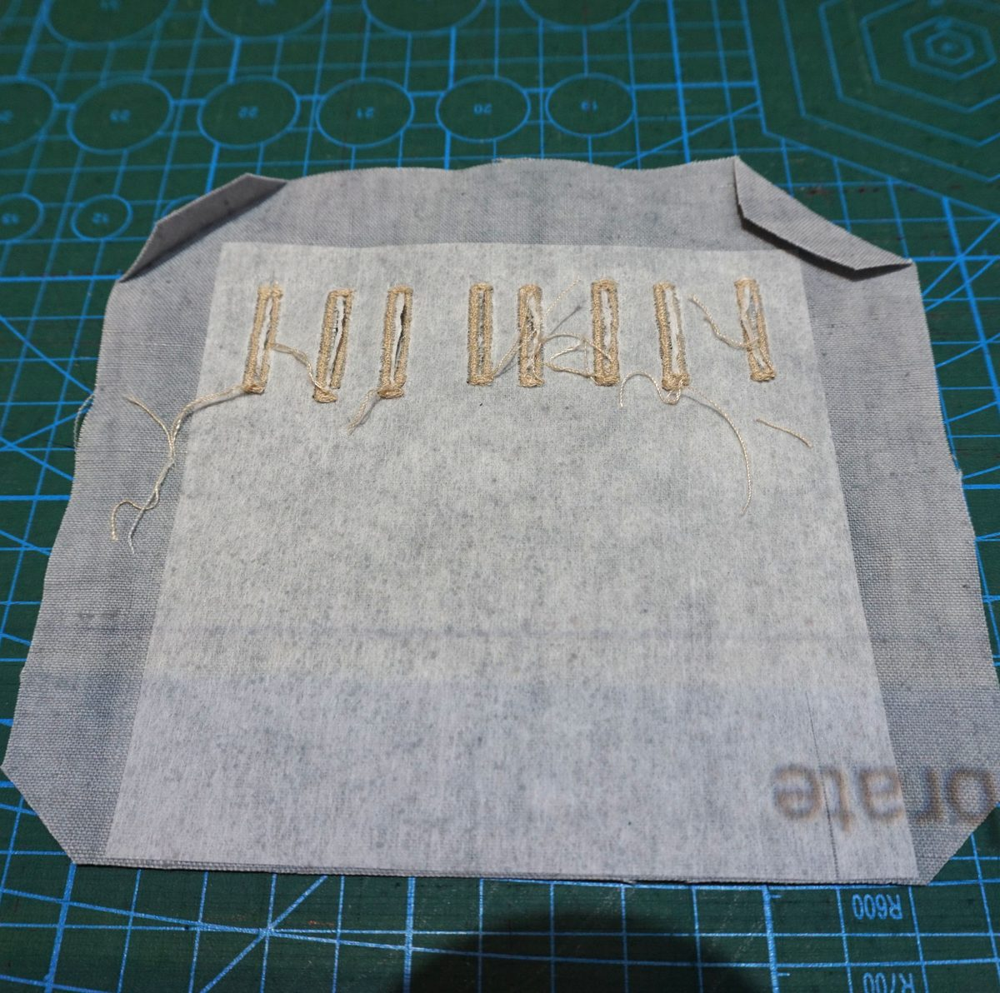
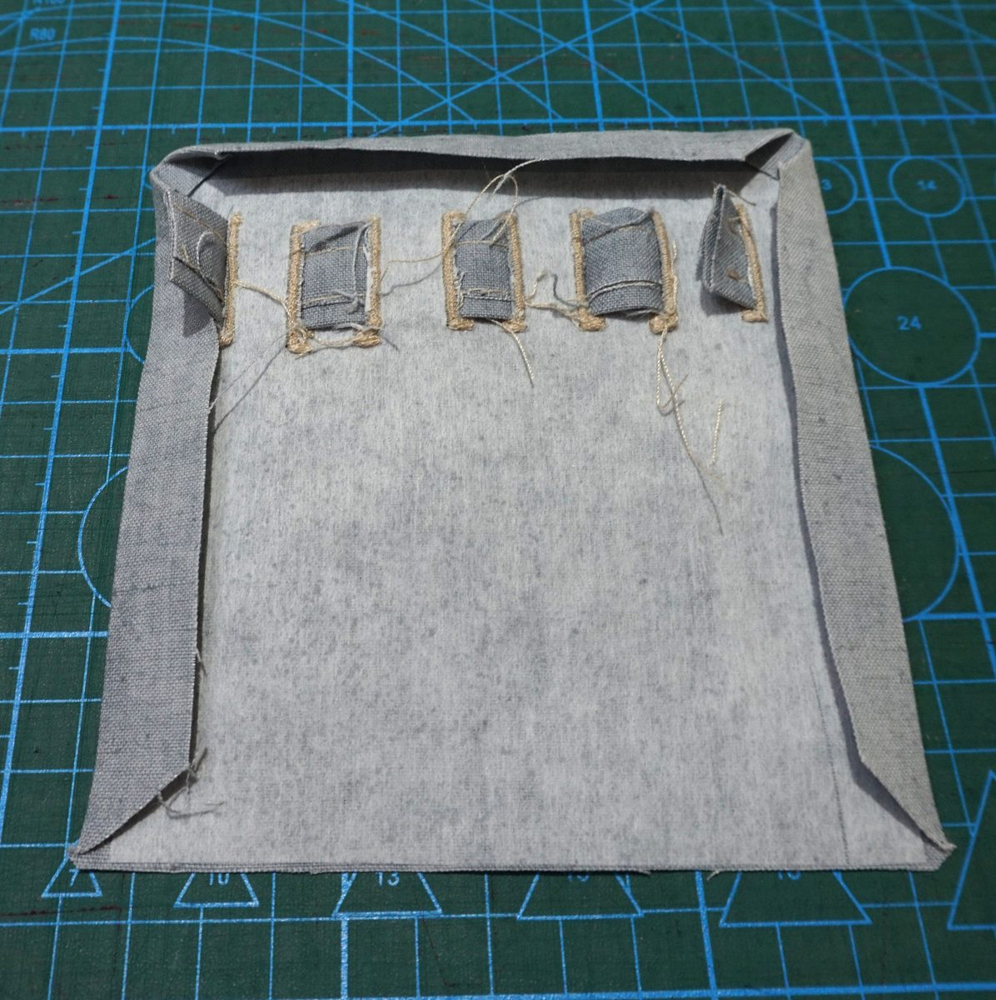
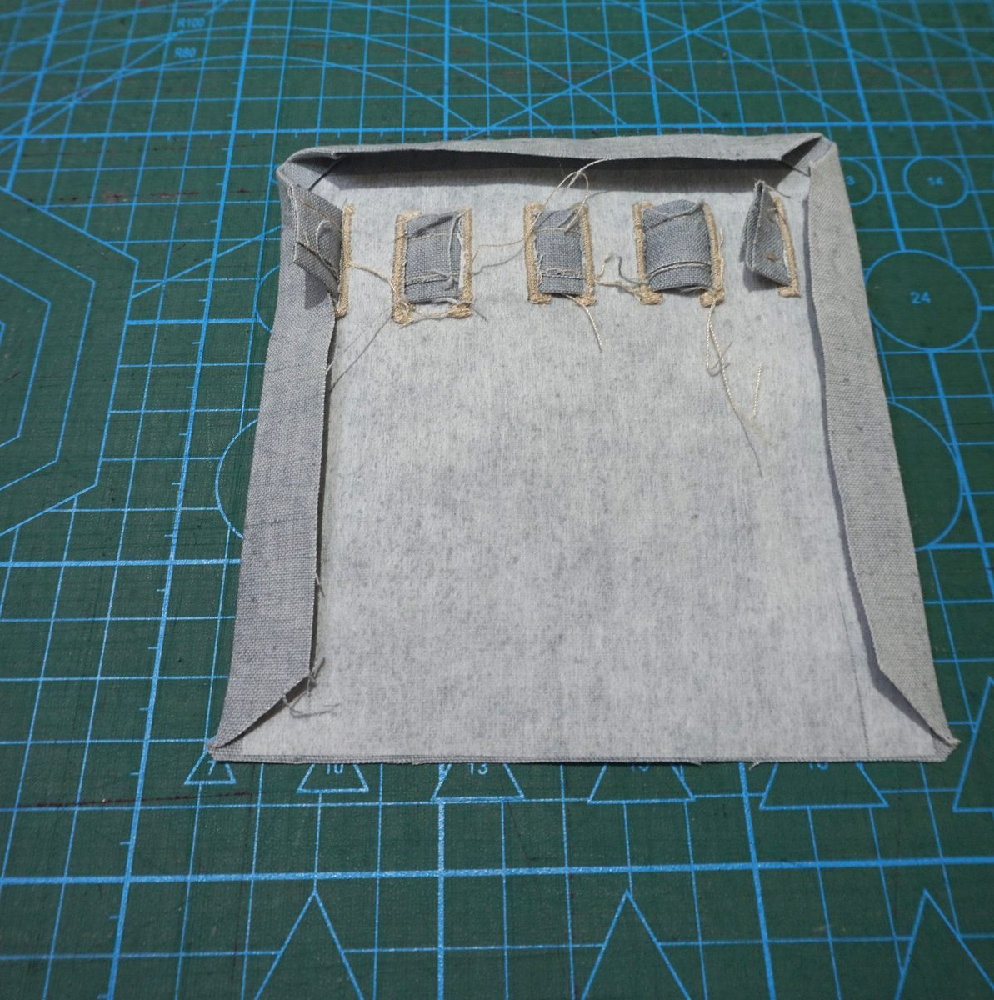

How to sew and assemble the cartridge holder (pen and glasses holder)
Download the pattern on the Cartridge holder page. The pieces are named as on the PDF: Main piece, Pocket, Ribbon strip, Fusible interfacing.
Fuse the interfacing to the wrong side (the back) of the Main piece.
Make the 8 buttonholes on the red lines, then cut them open (with a seam ripper, taking care not to cut the stitches).

Buttonholes opened with a seam ripper Fold the two top corners to the wrong side, onto the interfacing.

The top corners folded to the wrong side Fold the fold-under allowances of the three sides (top, left, right) to the wrong side. This gives two clean top corners formed by the folds. For the simplified version, fold the allowances of all four sides.

Fold-under allowances folded to the wrong side: two clean top corners Make the Ribbon strip: fold the edges along the blue lines, then topstitch both sides.
Thread the ribbon through the buttonholes, alternating over and under.

The ribbon forms four loops Sew the ribbon ends inside the first and last buttonholes, so the stitching is hidden.

Ribbon ends sewn, seen from the wrong side Pocket: fold all the fold-under allowances to the inside. (Version with a pocket only.)
Slide the bottom of the Main piece into the small fold of the Pocket, then fold the Pocket's ends over onto the interfaced side of the Main piece. The pens, held from below, cannot slip out.

Pocket ends folded over 
Pocket placed against the bottom of the Main piece Position the cartridge holder where a left chest pocket normally goes and topstitch all 4 sides, matching the topstitching on the garment.

Cartridge holder topstitched on all 4 sides
Simplified version: same steps, without the pocket: follow steps 1 to 7, then step 10 (fold the allowances on all 4 sides in step 4).
Need a technical term? See the glossary.